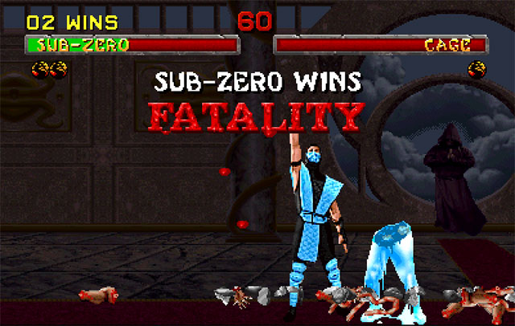

10 trò chơi khiến game thủ chỉ muốn vả lặt mặt hãng game - P.Cuối

Mortal Kombat: Lịch sử tràn đầy mỹ học về bạo lực của FATALITY – P.1
Reddit náo loạn sau tin Levi tái ngộ GAM
10 trò chơi khiến game thủ chỉ muốn vả lặt mặt hãng game - P.1
Bên cạnh những trò chơi xuất sắc, thị trường game vẫn luôn có những sản phẩm “WTF?”, chúng khiến người chơi chỉ muốn chửi thẳng mặt vào hãng game mà thôi. Trong thị trường trò chơi điện tử, không phải lúc nào các hãng game cũng có thể phát triển ra những trò chơi hấp dẫn. Đôi lúc, có thể do bị ma nhập nên nhiều hãng đã làm ra những trò chơi rất độc đáo. Người hâm mộ chỉ cần trải nghiệm nửa tiếng đầu thôi cũng phải thốt lên “WTF?” và muốn “vả cho lật mặt” đứa nào làm ra nó. Nhất là khi bạn bỏ tận 60 USD xong nhận về một cục rác càng chơi càng bực mình chứ chả thấy giải trí gì cả.Thậm chí cả những hãng game lớn cũng không thoát khỏi những trường hợp như vậy. Họ chi hàng chục triệu, hàng trăm triệu USD ra chỉ để mang tới cho người hâm mộ những sự bực tức, ức chế, chứ chẳng đem lại giá trị hay niềm vui giải trí nào cả.
10/ Call of Duty: Ghosts
Ban đầu, Ghosts được kỳ vọng rất nhiều bởi đây là sản phẩm tới từ Infinity Ward – cha đẻ của series Modern Warfare đã gây nghiện biết bao game thủ trên thế giới. Hay thậm chí nhiều người cũng đã hi vọng rằng game sẽ phần nào đó kết nối với Modern Warfare trước đó. Vì nó mang hẳn tên “Ghost”, nhân vật gây ấn tượng nhất trong Modern Warfare, thậm chí rất nhiều game thủ săn tìm chiếc mặt nạ in hình đầu sọ của Ghost để sưu tầm.
Nhưng không! Đối với những game thủ khó tính, Call of Duty: Ghosts chính là cú lừa cực mạnh mà Infinity Ward dành tặng cho người hâm mộ. Với cả những người chơi dễ tính hơn họ cũng phải thất bất bình về sản phẩm này. Mặc dù game vẫn mang đậm phong cách điện ảnh truyền thống, nhịp game nhanh, dồn dập và cũng có vài trường đoạn khá epic. Tuy nhiên, nếu xét về tổng thể, Ghosts chưa thể làm hài lòng người hâm mộ.
Trò chơi có cốt truyện ngắn và có phần thiếu ý tưởng. Chất lượng đồ họa chỉ xứng đáng ở mức tầm trung, nhưng cấu hình yêu cầu thì lại cao ngất ngưởng. Chế độ chơi mạng cũng không có cải tiến gì nhiều so với các phiên bản trước đó.
Nhiều người thậm chí cho rằng Call of Duty: Ghosts là khởi đầu cho sự kết thúc của dòng game Call of Duty hàng năm tới từ Activision.
9/ Watch Dogs
Trong danh sách này, tôi không thể không nhắc tới Watch Dogs. Cú lừa này tới từ Ubisoft thậm chí còn mạnh hơn cả của Infinity Ward. Về cơ bản, ý tưởng và bối cảnh của Watch Dogs là rất thú vị. Game cho người chơi sở hữu công nghệ hack mọi thứ từ giao thông đường phố cho tới hack thông tin cá nhân của mỗi người dần,…
Nhưng sự thú vị đó không thể cứu vãn lại được rằng Ubisoft đã lừa game thủ. Nếu đã từng xem bản demo hay trailer từ E3 2012, bạn sẽ thấy sự cách biệt giữa demo và thực tế khi phát hành của Watch Dogs là quá lớn. Bối cảnh thành phố Chicago trong demo đầy sức sống, sôi động và đẹp bao nhiêu thì khi phát hành thực tế, nó lại buồn tẻ và xấu đi bấy nhiêu.
Thôi nào Ubisoft, nói dối người hâm mộ như vậy là không ngoan. Game thủ đều biết và có thể thông cảm cho việc downgrade đồ họa khi phát hành chính thúc, nhưng hạ cấp nó xuống quá mức trung bình thì Ubisoft phải nhận cơn thịnh nộ tới từ cộng đồng cũng đâu có oan. Kể từ đó, các sản phẩm về sau của hãng game nước Pháp phải nhận những cái nhìn đầy nghi hoặc, cũng không có nhiều người dám pre-order trước trò chơi tới từ Ubisoft nữa.
Đối thủ cạnh tranh trực tiếp với Grand Theft Auto ư? Ubisoft đừng chọc cười các bạn thế chứ.
8/ Destiny
Có thể nói Destiny là một tựa game được marketing rất rất tốt. Người hâm mộ có thể nghe thấy tin tức hay hình ảnh của trò chơi ở khắp mọi nơi. Cùng với đó là khoảng thời gian 6 năm trời hãng phát triển Bungie ấp ủ và kinh phí sản xuất lên tới nửa tỷ USD. Điều này càng khiến cho Destiny được kỳ vọng sẽ là một trong những trò chơi xuất sắc nhất. Tuy nhiên, khi ra mắt, game nhận được vô số phản ứng trái chiều tới từ cộng đồng game thủ và giới chuyên môn. Sau khi đã bỏ ra 60 USD, người hâm mộ nhận ra rằng Destiny chẳng có gì đặc biệt, loạt nhiệm vụ không tạo được sự cuốn hút và lặp lại quá nhiều. Cùng với đó là cốt truyện chính của Destiny cũng bị chê quá rời rạc, không tạo được sự liền mạch, dẫn tới việc người chơi khó theo dõi.
Trên thực tế trò chơi này không hề tới mức quá tệ. Nhưng chính việc marketing quá “nổ” dẫn tới việc game thủ đặt quá nhiều kỳ vọng vào Destiny. Hi vọng càng nhiều thì thất vọng cũng càng nhiều mà thôi.
7/ Dead Island
Techland đã có một màn ra mắt đầy tệ hại. Thay vì đưa người chơi một bản game hoàn chỉnh, hãng đã phát hành nhầm…một bản game đầy lỗi. Lỗi vặt, lỗi nghiêm trọng xuất hiện liên tục khiến trải nghiệm chơi game của người hâm mộ bị gián đoạn. Tôi có thể kể sơ qua một vài lỗi của Dead Island phát hành vào khoảng thời gian đầu tháng 9 năm 2011. Tay của một số NPC tự nhiên bị uốn cong tới kinh dị, hay đôi lúc các nhân vật trở nên vô hình. Game xuất hiện những góc bug cho người chơi khả năng đi xuyên tường, hay như thậm chí game thủ có thể… bất tử. Hiệu ứng âm thanh.
Chỉ trong ngày đầu phát hành, Techland đã nhận được phản hồi về tận 37 lỗi cần phải sửa gấp trong Dead Island. Khỏi phải nói chúng ta cũng biết khi đó cộng đồng người hâm mộ đã tức giận tới như thế nào.
6/ The Quiet Man
Quả thực, nếu để chê The Quiet Man, tôi có thể nói tới hết ngày mất. Mặc dù Square Enix là một hãng game có tiếng với hàng loạt các siêu phẩm đầy thành công, nhưng The Quiet Man là một trò chơi khó hiểu. Không ai hiểu được hãng làm ra trò chơi này với mục đích gì. Ban đầu trong trailer, The Quiet Man chủ yếu là những đoạn phim live-action, nhưng tới các trường đoạn gameplay, trò chơi lại “bung xòe” một nền đồ họa quá sức ngán ngẩm. Các đoạn lời thoại vô cùng sáo rỗng được thốt ra từ diễn xuất cẩu thả của diễn viên. Thậm chí những kẻ địch còn được thiết kế sao cho có phần giống nhau nữa. Các trường đoạn đánh nhau thì kẻ địch cũng chỉ làm nền khi bao quanh nhân vật chính gồm cả chục tên, nhưng lại chỉ muốn solo 1 vs 1.
Video Review
Về chúng tôi